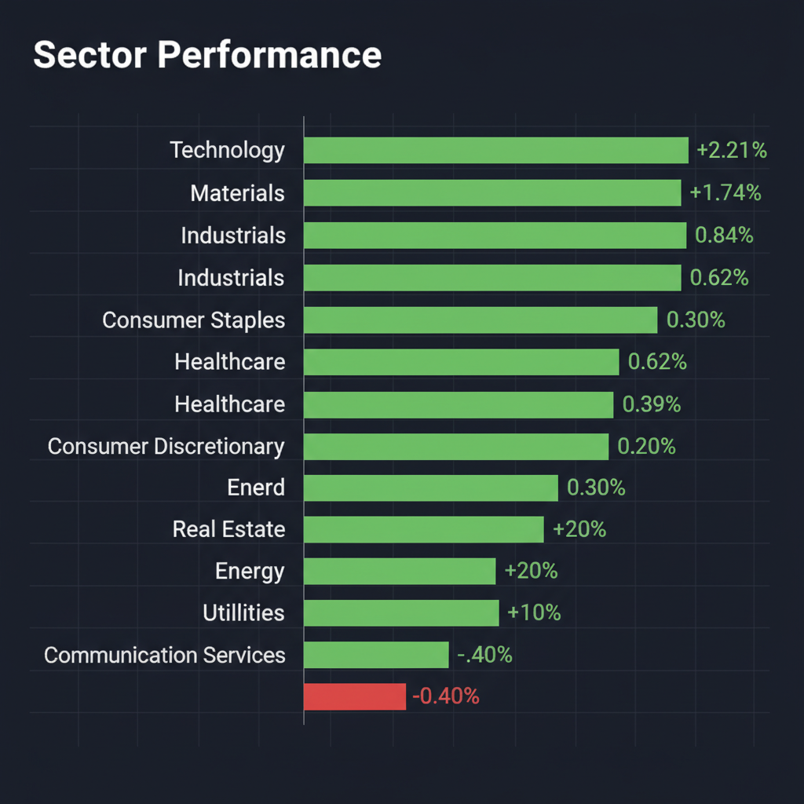
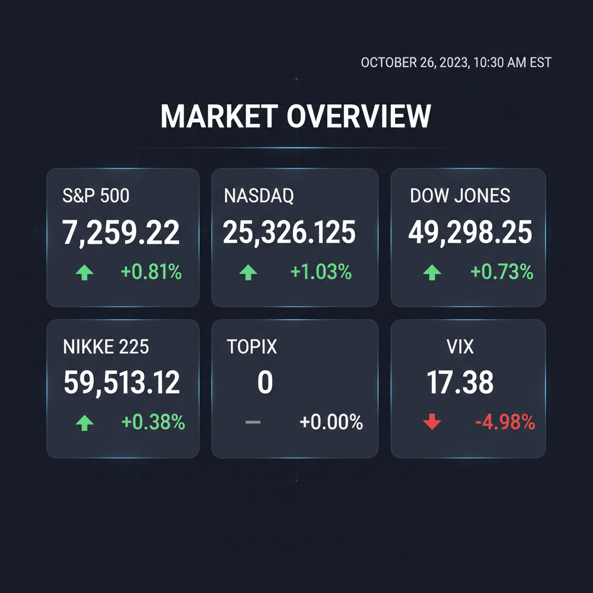

Daily Investment Report - 2026-05-06
Generated: 2026/5/6 7:28:51


本日の投資チームミーティングでの各エージェントの分析と議論を踏まえ、最終的な投資レポートを以下の通り作成いたしました。
1. エグゼクティブサマリー
- AI・半導体が牽引し主要指数が過去最高値を更新する強いリスクオン相場ですが、バリュエーションの過熱感と極端な資金集中が見られます。
- 中東の地政学リスク（ホルムズ海峡の緊張）と高金利の長期化が市場に十分織り込まれておらず、突発的なインフレ再燃や暴落リスクへの警戒が急務です。
- 結論として、大型ハイテク株の利益確定を進め、業績裏付けのある「割安な中小型株」への資金シフトと、エネルギー・ヘルスケアを用いた厳格なリスクヘッジを推奨します。
2. 注目銘柄リスト
強気（買い推奨）
- Farmer Mac (AGM) [時価総額: 約20億ドル]: 米国の農業不動産ローン市場を担う政府支援機関で、ROE15%・PER10倍前後の割安水準を誇ります。決算でのEPS予想超過にもかかわらず株価が下落しており、バリュエーション的に安全マージンの高い絶好の押し目買い候補です。
- Crexendo (CXDO) [時価総額: 2億〜5億ドル規模]: 中小企業向けクラウド通信SaaS企業で、第1四半期決算が市場予測を上回りました。ARR（経常収益）の積み上がりによる持続的な成長が見込まれる、機関投資家未発掘の隠れたテンバガー候補です。ただし、急騰直後のため窓埋めのプルバックを待ってからのエントリーを推奨します。
中立（様子見）
- Compass (COMP) [時価総額: 中小型]: シナジー目標の引き上げと好決算により21%急騰し、強いモメンタムを持つため短期トレードとしては魅力的です。しかし、高金利下の不動産市況と低い利益率を考慮すると、中長期的なファンダメンタル投資としては警戒が必要です。
- Solid Power (SLDP) [時価総額: 2億〜5億ドル規模]: 次世代EVバッテリー（全固体電池）のパイオニアであり破壊的イノベーションのポテンシャル（テンバガー候補）を秘めていますが、研究開発フェーズで安定したキャッシュフローを生み出しておらず、量産化の技術リスクが高いため中立とします。
- Intel (INTC) / Micron (MU) [時価総額: 超大型]: AI需要の恩恵を受けて強烈な上昇トレンドにありますが、バリュエーションの過熱感と設備投資によるフリーキャッシュフロー圧迫の懸念があるため、新規買いは控え、保有者はトレーリングストップによる利益の確保を優先してください。
弱気（警戒）
- Spirit Airlines (SAVE) [時価総額: 小型]: 世代最大規模の経営破綻により、破産裁判所での事業解体プロセスに入っています。テクニカル・ファンダメンタルズともに完全に崩壊しており、自律反発狙いの逆張りは極めて危険です。
- Scilex Holding (SCLX) [時価総額: 中小型]: 10億ドル規模の株式交換買収合意で注目を集めていますが、バイオテック企業特有の開発遅延リスクや、研究開発費を補うための大規模な増資（株主価値の希薄化）リスクが極めて高いため投資不適格と判断します。
3. セクター推奨ランキング
- 1位：中小型の半導体製造装置部品・化学素材（日本株含む）
大型半導体株の高騰の恩恵を受けつつも、PER10〜15倍台に放置されているサプライヤー群です。特に日本株は157円台の歴史的円安による為替差益がEPSを直接押し上げるため、大幅な上方修正が期待できます。
マクロ経済の動向に左右されにくいディフェンシブな性質を持ち、相場急落時のダウンサイド・プロテクションとして機能します。個別企業のパイプライン進展による超過収益も狙えます。
ホルムズ海峡周辺の緊張や中東地政学リスクに対する「最も安価なテールリスク・ヘッジ」として機能します。ポートフォリオの一部を割り当てることで、原油高によるインフレ再燃リスクに備えることができます。
AIインフラの整備やグローバルなサプライチェーン再構築（フレンドショアリング）の恩恵を直接受けるため、景気拡大が持続する環境下で手堅いパフォーマンスが期待できます。
構造的にマージンが低く、人件費や燃料費の高止まりを価格転嫁できない労働集約型ビジネスは、現在の高金利・インフレ環境下で真っ先に淘汰される対象です。
4. 今週の注目イベント
- ワーナー・ブラザース・ディスカバリー（WBD）の第1四半期決算発表: パラマウントの1,109億ドルという超大型買収に関連するバランスシートへの影響と、有利子負債の状況が注目されます。
- eBayの取締役会: ゲームストップ（GameStop）からの提案に関する協議が予定されており、関連銘柄のボラティリティ上昇に注意が必要です。
- 中東・ホルムズ海峡を巡る地政学ヘッドライン: 米国・バーレーンによる海洋連合の動きと、イラン側の船舶管理メカニズムを巡る対立の激化有無、およびそれに伴う原油価格の変動。
- 為替市場（USD/JPY）の動向: 1ドル=157円台後半での推移を受けた、日本の通貨当局による為替介入、および日銀のタカ派的な発言の有無。
5. リスク要因
- 第2次インフレショックとスタグフレーション: 中東での軍事的エスカレーションやホルムズ海峡の実質封鎖により原油価格が急騰した場合、インフレが再燃し、FRBの利下げ期待が完全に後退するリスク。
- ガンマ・スクイーズの逆回転（フラッシュ・クラッシュ）: オプション市場で過剰に積み上がった半導体大型株のコール・ポジションが、AI投資への期待剥落を機に一斉に巻き戻され、相場全体がメルトダウンするリスク。
- 歴史的円安に伴う為替介入・日銀正常化ショック: 157円台という円安が限界点に達し、突発的な円買い介入や金利引き上げが行われた場合、グローバルな円キャリートレードの巻き戻しが発生するリスク。
- バリュートラップと連鎖倒産リスク: 高金利環境が想定以上に長期化（Higher for Longer）することで、有利子負債への依存度が高い企業や赤字の小型SaaS企業の資金繰りが悪化するリスク。
6. アクションアイテム
- 保有中のハイテク・半導体大型株のポジションを半減（利益確定）させ、ポートフォリオ内の現金比率を通常の2倍程度に引き上げる。
- 利益を確保しつつ急落リスクを回避するため、保有銘柄の直近のサポートライン下（または20日移動平均線付近）に厳格なトレーリング・ストップを設定する。
- VIX指数が17台と比較的低い今のうちに、Nasdaqや半導体ETFを対象としたプット・オプションを購入し、最悪の暴落シナリオに対するヘッジを構築する。
- ポートフォリオの5〜10%をエネルギーETF（XLE）やヘルスケアセクター（XLV）に振り向け、地政学リスクおよび景気後退リスクへのバッファーを確保する。
- 新規投資資金は、バリュエーションが高騰した大型株ではなく、PBR1倍割れで営業利益率10%以上を誇る「為替感応度の高い日本のBtoB中小型バリュー株」へ振り向ける。